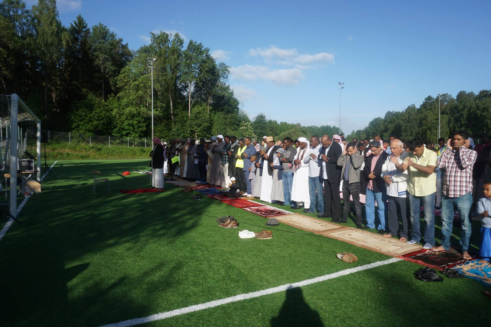
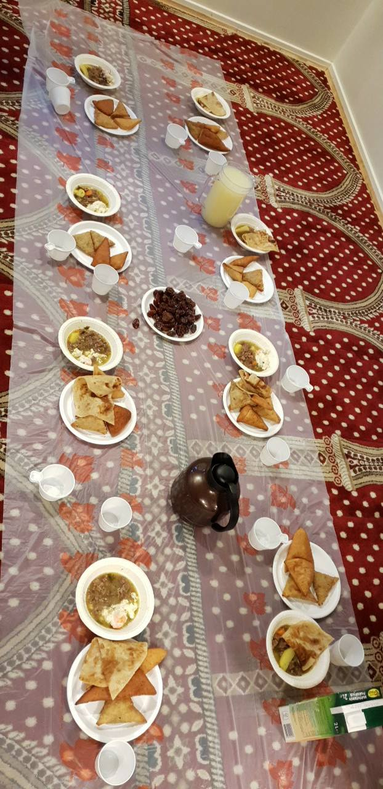
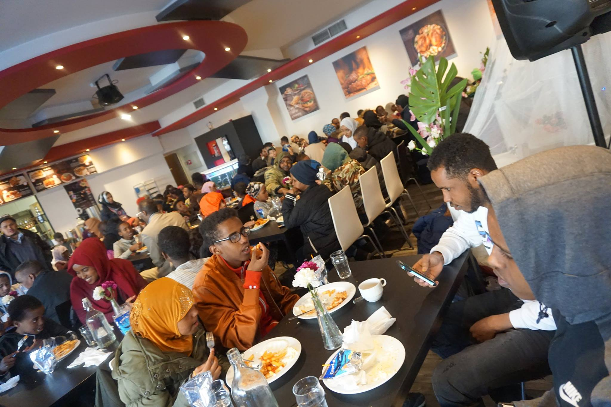

Om SIK
En inkluderande mötesplats med fokus på bön, bildning, språk, olika kulturer och trygg gemenskap.
En inkluderande mötesplats med fokus på bön, bildning, språk, olika kulturer och trygg gemenskap.

SIK arbetar för att skapa en stabil och välkomnande mötesplats där människor kan be, lära sig, växa och bidra till samhället.
Föreningen samlar människor kring kunskap, språk, kulturarv, familjeaktiviteter och social gemenskap.
Dagliga böner, fredagsbön och religiös vägledning.
Undervisningar, föreläsningar, samtal, läxstöd och praktisk kunskap.
Verksamhet för barn, ungdomar, familjer och äldre.
Språk, kultur, identitet och erfarenheter från olika bakgrunder.



En tydlig, respektfull och tillgänglig förening för tro, kultur och samhällsgemenskap.
Vi möter människor med värme, integritet och respekt.
Vi prioriterar undervisningar, samtal, studier och livslångt lärande.
Vi bygger broar mellan generationer, språk och olika kulturer.